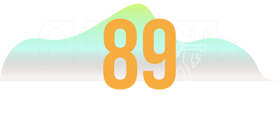

Процент побед боксер одержал нокаутом или техническим нокаутом.
Чем выше показатель, тем чаще боксер заканчивал бой быстро.
Стойка
Правша
Вес
66
Стиль
Классический
Аналитика
Сила удара
При прямом попадании
Скорость
Скорость ударов/передвижения

Стойкость
Это то, насколько хорошо боец подготовлен физически
Рефлексы
Позволяет уклоняться от ударов в последний момент
IQ
Главное оружие Ивана.
Во время боя постоянно менял рисунок поединка.
Изучал соперника. Ломал его привычный стиль.
Практически никогда не шел по одному сценарию.
Характер боя
Первые раунды посвящал изучению соперника.
Начиная с середины боя постепенно забирал инициативу.
Практически никогда не форсировал события.
Предпочитал побеждать за счет полного контроля.
В истории бокса есть бойцы, которые побеждают благодаря силе. Есть те, кто берёт своё скоростью, выносливостью или невероятной волей. Пабло Кабальеро принадлежал к другой категории. Он умел превращать чужие ошибки в собственные победы. Он мог провести несколько раундов, почти не рискуя, изучая соперника, а затем нанести один точный удар, после которого всё заканчивалось.
Но таким Кабальеро был не всегда.
За образом хладнокровного мастера контратак скрывалась история человека, который когда-то пытался стать совсем другим боксёром — и едва не погубил собственную карьеру.
Росарио. Мальчик, которому приходилось бороться
Пабло Кабальеро родился в Росарио, Аргентина. Его детство прошло в бедности. Большие возможности не ждали его за углом, а дорога к успеху не казалась ни простой, ни гарантированной. Бокс стал для него шансом изменить собственную жизнь.
В молодости Кабальеро мечтал о нокаутах. Ему хотелось быть тем бойцом, которого боятся ещё до первого гонга. Он стремился доказывать превосходство силой удара, идти вперёд и заканчивать поединки убедительно. Он верил, что именно так выглядит настоящий чемпион.
Первые результаты не опровергали эту мечту. Пабло выиграл пять боёв подряд, каждый раз одерживая победу по очкам. Однако за этими победами скрывалась проблема: он ещё не понимал, каким боксёром должен стать.
Он хотел бить сильнее, но пока не умел правильно подготавливать удар. Он искал возможность закончить бой одним попаданием, но забывал о джебе, дистанции и последовательном построении атаки. Его желание быть панчером опережало его мастерство.
И вскоре ринг заставил его столкнуться с реальностью.
Два поражения, о которых почти никто не знал
Первые серьёзные неудачи Кабальеро пришлись на период, когда его бои ещё не транслировались. Не было большой аудитории, громких заголовков и миллионов зрителей. Были только ринг, соперник и необходимость понять, почему всё идёт не так.
Сначала Пабло встретился с Эмбросу Джорданом. Затем — с Уолтером Уэстом.
Оба поединка закончились техническими нокаутами. Два поражения подряд после пяти побед по очкам стали болезненным ударом по его уверенности. Кабальеро пытался навязать соперникам силовой бокс, искал нокаутирующий удар, но его атаки не складывались в цельную систему. Он пренебрегал джебом, не всегда правильно выбирал момент для атаки и оставлял слишком много возможностей для ответных действий.
Он хотел диктовать условия боя, не научившись сначала понимать его.
Эти поражения не вошли в телевизионную историю бокса. Их не пересказывали комментаторы, а имена Джордана и Уэста не стали частью легенды Кабальеро для широкой публики. Но именно тогда его карьера подошла к одному из важнейших поворотов.
Пабло мог продолжать упрямо искать силу, которой, как ему казалось, ему не хватало. Мог решить, что профессиональный бокс просто оказался не для него. Вместо этого он встретил человека, который увидел в нём не неудавшегося панчера, а будущего мастера совершенно другого стиля.
Этим человеком был Родриго Эзикель Паласио.
Родриго Паласио — человек, который изменил всё
Паласио понял то, чего сам Кабальеро ещё не мог принять: Пабло не обязан был побеждать так, как он себе представлял.
Ему не нужно было первым бросаться в атаку. Не нужно было доказывать силу каждым ударом. Не нужно было превращать каждый раунд в попытку нокаутировать соперника.
Родриго начал строить его бокс вокруг джеба, дистанции, наблюдения и контратаки. Вместо того чтобы заставлять Кабальеро постоянно создавать опасность самому, он научил его использовать опасность, которую создавал противник.
Джеб стал инструментом разведки. Дистанция — способом контролировать ход поединка. Защита перестала быть простым спасением от удара и превратилась в подготовку к ответной атаке. Каждое движение соперника могло рассказать Пабло что-то новое, а каждая ошибка — открыть возможность для точного попадания.
Кабальеро предстояло освоить не просто набор приёмов. Ему нужно было изменить собственное представление о боксе.
И он справился.
Со временем контратакующий стиль перестал быть для него тренерской установкой и стал естественным продолжением его мышления. Пабло научился читать соперников, замечать малейшие изменения в их поведении и выбирать момент, когда удар становился не просто сильным, а неизбежным.
Он больше не гонялся за нокаутом.
Он создавал условия, при которых нокаут становился закономерным итогом боя.
Родриго Паласио впоследствии ушёл из жизни, но его работа осталась в каждом движении ученика. В том, как Кабальеро встречал атакующего противника. В том, как выдерживал паузу, не поддаваясь на провокации. В том, как мог выглядеть почти пассивным, а через секунду полностью изменить ход поединка.
Величайшим достижением Паласио стало не то, что он научил Пабло побеждать. Он помог ему понять, каким боксёром тот был способен стать.
Мастер контратаки
В зрелые годы Кабальеро превратился в одного из самых расчётливых и опасных бойцов своего поколения. Его бокс не строился на постоянном давлении. Он предпочитал изучать соперника, контролировать дистанцию и заставлять противника принимать решения, которые впоследствии оборачивались против него.
Пабло не тратил движения без необходимости. Он мог работать джебом, проверяя реакцию оппонента, менять ритм, отходить на нужную дистанцию и терпеливо ждать. Он не стремился выиграть каждый эпизод зрелищным обменом ударами. Ему было важнее выиграть весь бой.
При этом Кабальеро никогда не был просто осторожным защитником. Его контратаки обладали настоящей разрушительной силой. Он умел завершить поединок одним точным попаданием, потому что понимал, откуда придёт противник, в какой момент откроется защита и куда следует направить удар.
В этом и заключалась его особая красота. Пабло не выглядел человеком, который отчаянно ищет возможность победить. Казалось, он уже знает, что произойдёт, и лишь ждёт, когда соперник сам приблизит этот момент.
Его прозвище не нуждалось в объяснениях. Кабальеро действительно стал художником ринга — не потому, что каждый его бой был эффектным, а потому, что в его лучших выступлениях чувствовались замысел, точность и завершённость.
Вершина в полусреднем весе
Наибольшего признания Кабальеро добился в полусреднем весе. Именно здесь его стиль раскрылся наиболее полно. Скорость, чувство дистанции, точность и способность читать соперника позволяли ему контролировать бой против самых разных противников.
Он стал абсолютным чемпионом и превратился в одного из главных представителей своего поколения. Его уважали не только за результаты, но и за сам способ достижения побед. Кабальеро доказывал, что доминирование не обязательно должно выглядеть как непрерывная атака. Иногда настоящий контроль заключается в том, чтобы не позволить сопернику реализовать собственный план.
Позднее он выступал и в среднем весе, продолжая опираться на фундамент, заложенный Паласио. С возрастом его бокс не зависел исключительно от физических преимуществ. Опыт помогал ему компенсировать то, что уже невозможно было поддерживать одной молодостью: скорость реакции, прежнюю подвижность и способность выдерживать высокий темп на протяжении всего поединка.
Кабальеро становился не менее опасным — он становился более избирательным.
Тони Гразиано — два поражения, которые не исчезли
Даже великий мастер не может контролировать всё. В карьере Кабальеро были противники, которые сумели нарушить привычный порядок его боя. Одним из них стал Тони Гразиано.
Их противостояние занимало особое место в истории Пабло. Два из четырёх поражений Кабальеро в профессиональной карьере пришлись именно на Гразиано. Это была цена встречи с соперником, чья скорость, агрессия и готовность идти на обострение создавали угрозу даже для столь расчётливого бойца.
Гразиано представлял собой иной тип опасности. Если Кабальеро стремился прочитать атаку и наказать за ошибку, то Тони мог заставить соперника реагировать на непрерывное давление и быстрые серии. Там, где Пабло искал контроль, Гразиано создавал хаос.
Дважды Кабальеро не смог выйти из этого противостояния победителем. И эти поражения важны не потому, что перечёркивают его величие, а потому, что напоминают: даже совершенный стиль имеет границы. Ни техника, ни интеллект не превращают боксёра в непобедимого человека.
Кабальеро остался великим не потому, что избежал поражений, а потому, что его карьера не сводилась к ним.
67 побед — и целая жизнь между ними
К сорока годам профессиональный рекорд Пабло Кабальеро составил 67 побед и 4 поражения, 61 победа нокаутом. Более девяноста процентов его побед завершились досрочно. Для бойца, чья главная особенность заключалась в расчёте и контратаках, это особенно показательная цифра.
За ней стоит не просто сила удара. Она говорит о способности выбирать момент, когда противник уже не успевает защититься, и наносить удар с максимальной эффективностью. Кабальеро мог выиграть бой по очкам, но если соперник предоставлял возможность закончить поединок, Пабло умел ею воспользоваться.
И всё же сухая статистика не рассказывает главного.
Она не показывает молодого боксёра, который после пяти побед не понимал, почему его силовые атаки не работают. Не сохраняет в себе два ранних поражения техническим нокаутом, полученных ещё до появления телевизионной славы. Не передаёт работу тренера, который сумел разглядеть талант там, где сам спортсмен видел лишь неудачу.
И она не объясняет, почему Кабальеро стал тем, кем стал.
Наследие
История Пабло Кабальеро — это история не о врождённом совершенстве. Он не вышел на ринг готовым мастером. Он ошибался, выбирал неправильный путь и пытался соответствовать образу боксёра, которым хотел быть, вместо того чтобы раскрыть собственные способности.
Его настоящая карьера началась не с первой победы и даже не с первого большого титула. Она началась тогда, когда он перестал пытаться стать панчером и научился думать как контрпанчер.
Родриго Эзикель Паласио помог ему найти этот путь. Кабальеро прошёл его сам — через тысячи тренировок, поединки, победы, поражения и годы совершенствования.
В сорок лет Пабло оставался напоминанием о том, что мастерство не всегда рождается из силы. Иногда оно появляется из умения ждать, наблюдать и понимать. Из способности отказаться от собственного представления о величии ради настоящего.
Он начинал как парень, который хотел нокаутировать каждого соперника.
Он вошёл в историю как человек, который научился видеть удар ещё до того, как тот был нанесён.
Пабло Кабальеро не просто овладел контратакой. Он превратил её в искусство.